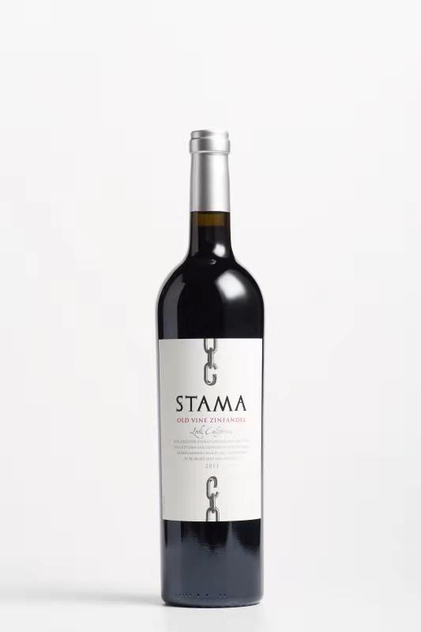
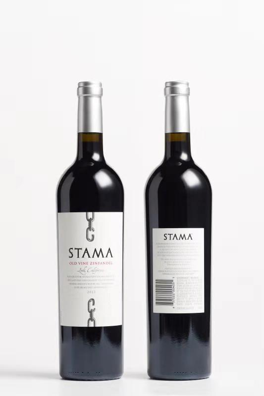
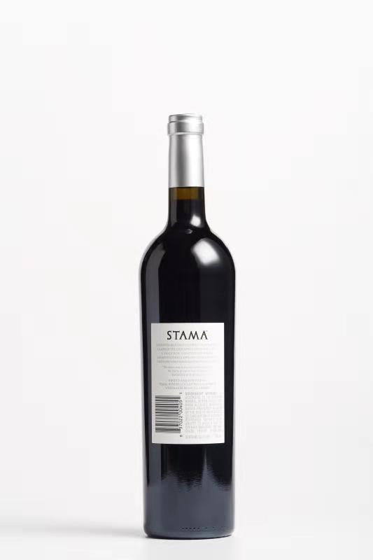

品名：斯丹蔓萝老树仙芬黛红葡萄酒2011（STAMA Old Vine Zinfandel)



斯丹蔓萝老树仙芬黛红葡萄酒2011
（STAMA Old Vine Zinfandel)介绍
产地：美国加州洛迪）
年份：2011年
酒体：浓郁酒体
成分：仙芬黛
颜色：宝石红
香味：复杂的神色水果香气，兼有呍呢拿，咖啡和香料的辛芳
口感：口感丰腴，优美的单宁，成就浓厚甘美的酒体
酒精度：15.9%
净含量：750毫升
酿酒师评鉴：
颜色是亮丽宝石红，扑鼻的复杂深色水果香气，兼有兼有呍呢拿，咖啡和香料的辛芳，入口丰腴圆润，优良的葡萄质量管理，使每一颗葡萄能成为优质的琼浆。于法国木桶陈贮，造就出具优美层次的单宁，浓厚甘美的酒体。